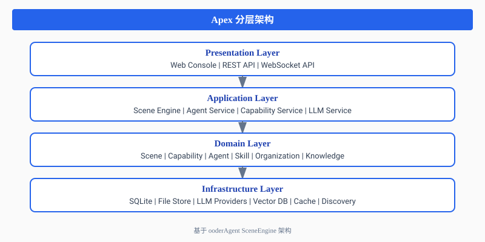
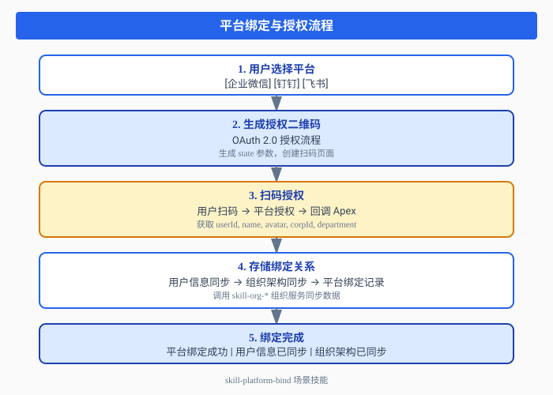

当企业微信、钉钉、飞书三大平台的IM Skills接入Apex，一个从"扫码授权"到"智能协作"的完整闭环就此形成。
一、Apex：轻量级Agent OS的定位
1.1 什么是Apex？
根据Apex官方架构文档的定义：
Apex是一款轻量级Agent OS，它将大语言模型（LLM）技术与企业业务场景深度融合，实现了从"文档规范"到"可执行场景"的自动化转换。
Apex的核心定位是作为企业数字化转型的"中枢神经系统"，通过AI技术重构企业流程规范的建设、执行和优化全生命周期。
1.2 核心架构
Apex采用分层架构设计：

图1：Apex四层架构设计
核心概念：
| 概念 | 定义 |
|---|---|
| 场景（Scene） | 场景是Apex的核心概念，代表一个完整的业务场景。场景 = 参与者 + 能力 + 知识库 + LLM |
| 能力（Capability） | 可复用的功能单元，支持热插拔，状态流转：INSTALLED → ACTIVATED → RUNNING → DEACTIVATED → UNINSTALLED |
| Agent | 场景中的智能代理，负责执行任务。类型包括：PageAgent、SuperAgent、SubAgent |
| 技能（Skill） | 能力的载体，通过YAML定义，支持三种形式：DRIVER、PROVIDER、SCENE |
二、三大IM Skills：企业级消息能力的统一封装
2.1 技能概述
OoderAgent生态为Apex提供了三大IM Skills，实现了企业微信、钉钉、飞书三大平台的统一接入：
| Skill ID | 名称 | 平台 | 核心能力 |
|---|---|---|---|
skill-im-wecom | WeCom IM Service | 企业微信 | send-message, send-text, send-markdown |
skill-im-dingding | DingTalk IM Service | 钉钉 | send-message, send-ding, send-markdown, send-action-card |
skill-im-feishu | Feishu IM Service | 飞书 | send-message, send-post, send-interactive |
2.2 技能配置规范
每个IM Skill都遵循OoderAgent技能配置规范，以skill-im-dingding为例：
apiVersion: skill.ooder.net/v1
kind: Skill
metadata:
id: skill-im-dingding
name: DingTalk IM Service
version: 2.3.1
description: 钉钉IM服务，提供消息发送、DING消息、日程管理、待办同步等功能
spec:
skillForm: DRIVER
type: im-skill
ownership: platform
capability:
category: IM
code: IM_DINGDING
operations: [send-message, send-ding, send-markdown, send-action-card]
llmConfig:
required: false
defaultProvider: "deepseek"
defaultModel: "deepseek-chat"
functionCalling:
enabled: true
tools:
- name: send_message
description: "发送钉钉消息"
parameters:
type: object
properties:
receiver:
type: string
enum: [user, group]
receiverId:
type: string
msgType:
type: string
enum: [text, markdown, action_card]
content:
type: string
config:
required:
- name: DINGTALK_APP_KEY
type: string
- name: DINGTALK_APP_SECRET
type: string
secret: true2.3 LLM Function Calling集成
三大IM Skills都支持LLM Function Calling，使得Agent可以通过自然语言调用消息能力。
钉钉DING消息示例：
{
"name": "send_ding",
"description": "发送钉钉DING消息（高优先级提醒）",
"parameters": {
"type": "object",
"properties": {
"userId": { "type": "string", "description": "用户ID" },
"title": { "type": "string", "description": "消息标题" },
"content": { "type": "string", "description": "消息内容" },
"reminderType": { "type": "integer", "enum": [1, 2], "default": 1 }
}
}
}三、从扫码开始：平台绑定与授权流程
3.1 平台绑定场景
Apex通过skill-platform-bind场景技能实现多平台绑定：

图2：平台绑定与授权流程
3.2 OAuth授权流程
根据skill-common认证模块的设计，授权流程遵循标准OAuth 2.0：
// 授权服务接口
public interface AuthService {
Object login(String username, String password, String clientIp);
Object getCurrentUser();
void logout();
}
// 用户信息提供者
public interface UserInfoProvider {
Object login(String username, String password, String clientIp, String role);
}四、深度融合：场景组与智能协作
4.1 场景组概念
根据Apex场景组需求文档，场景组是Agent协作的容器：
场景组定义了一组参与者、目标、规则和资源，支持用户与Agent在同一场景组中协作。
场景组核心要素：
| 要素 | 说明 |
|---|---|
| 参与者 | 用户、Agent、设备等 |
| 角色 | 企业管理员、部门经理、普通员工、Agent |
| 能力 | 场景组可用的能力绑定 |
| 知识库 | 场景组关联的知识库 |
4.2 IM Skills在场景组中的角色
当IM Skills与Apex场景组融合后，每个场景组都可以：
- 消息通知：通过IM平台推送场景组动态
- 待办同步：将场景组任务同步到IM平台待办
- 日程管理：场景组会议自动同步到IM日历
- 文档协作：场景组文档与IM平台文档互通
SceneGroup: 2024春季招聘
├── Participants: [张三(MANAGER), 李四(HR), Agent]
├── Capabilities: [简历筛选, 面试安排, Offer生成]
├── Knowledge: [招聘知识库, 岗位说明]
└── IM Bindings:
├── skill-im-dingding → 钉钉群通知
├── skill-im-wecom → 企业微信审批
└── skill-im-feishu → 飞书文档协作五、扫码后：LLM参与的智能活动
5.1 能力矩阵
用户扫码授权后，Apex可以获得以下能力：
| 能力类别 | 钉钉 | 飞书 | 企业微信 |
|---|---|---|---|
| 用户信息 | ✓ | ✓ | ✓ |
| 组织架构 | ✓ | ✓ | ✓ |
| 消息发送 | ✓ | ✓ | ✓ |
| DING/提醒 | ✓ | - | - |
| 日程管理 | ✓ | ✓ | ✓ |
| 待办同步 | ✓ | ✓ | ✓ |
| 文档协作 | - | ✓ | - |
| 审批流程 | ✓ | ✓ | ✓ |
5.2 LLM参与的智能活动
当这些能力与Apex的LLM层结合后，会产生以下"化学反应"：
5.2.1 智能消息助手
用户: "帮我通知所有面试官明天下午2点开会"
Agent处理流程:
1. LLM理解意图 → 创建会议通知任务
2. 查询组织架构 → 获取面试官列表
3. 调用skill-im-dingding → send_message
4. 调用skill-im-dingding → calendar.create_event
5. 返回执行结果
输出: 已向5位面试官发送会议通知，日程已同步5.2.2 智能日程协调
用户: "安排下周的面试，避开面试官的忙碌时间"
Agent处理流程:
1. LLM解析时间范围 → 下周一至周五
2. 调用calendar API → 获取面试官日程
3. LLM分析空闲时段 → 推荐可用时间
4. 调用skill-im-feishu → 创建飞书日程
5. 调用skill-im-dingding → 发送DING提醒
输出: 已安排3场面试，时间：周二14:00、周三10:00、周四15:005.2.3 智能文档生成
用户: "生成这份面试评估报告，发送给HR"
Agent处理流程:
1. LLM理解需求 → 面试评估报告
2. 查询知识库 → 获取评估模板
3. LLM生成内容 → 填充评估数据
4. 调用skill-im-feishu → 创建飞书文档
5. 调用skill-im-wecom → 发送企业微信通知
输出: 评估报告已生成，已发送给HR李四5.3 Agent Chat统一接口
根据Agent Chat SE SDK需求文档，Apex实现了完整的Agent通信架构：
// 统一会话管理
public interface UnifiedSessionManager {
Session createSession(SessionType type, String ownerId, Map<String, Object> metadata);
Session getSession(String sessionId);
OnlineStatus getOnlineStatus(String ownerId);
List<Session> getActiveSessionsByScene(String sceneGroupId);
}
// 消息队列服务
public interface MessageQueueService {
String sendMessage(MessageEnvelope message);
List<MessageEnvelope> getOfflineMessages(String recipientId);
void acknowledgeMessage(String messageId, String recipientId);
}
// A2A协议服务
public interface A2AProtocolService {
String sendA2AMessage(A2AMessage message);
void broadcastToAgents(String sceneGroupId, A2AMessage message);
A2AResponse sendRequest(A2ARequest request, long timeoutMs);
}六、技术实现：SE SDK 3.0.1
6.1 核心服务
根据MVP协同开发任务清单，SE SDK 3.0.1已实现：
| 服务 | 实现类 | Maven坐标 |
|---|---|---|
| 企业规范流程服务 | EnterpriseProcedureServiceImpl | net.ooder:scene-engine:3.0.1 |
| 融合模板服务 | FusionTemplateServiceImpl | net.ooder:scene-engine:3.0.1 |
| 完善度评估器 | DefaultCompletenessEvaluator | net.ooder:scene-engine:3.0.1 |
6.2 激活步骤执行器
SE SDK提供了6个内置执行器：
| 执行器 | stepType | 功能 |
|---|---|---|
| ConfirmParticipantsExecutor | confirm-participants | 确认参与者 |
| SelectPushTargetsExecutor | select-push-targets | 选择推送目标 |
| BindKnowledgeExecutor | bind-knowledge | 绑定知识库 |
| ConfigConditionsExecutor | config-conditions | 配置驱动条件 |
| ConfigPrivateCapabilitiesExecutor | config-private-capabilities | 配置私有能力 |
| ConfigWorkflowExecutor | config-workflow | 配置工作流 |
6.3 Maven仓库位置
D:\maven\.m2\repository\net\ooder\scene-engine\3.0.1\
├── scene-engine-3.0.1.jar
├── scene-engine-3.0.1-sources.jar
└── scene-engine-3.0.1.pom七、范式突破：从流程管理到场景智能
7.1 传统范式的困境
根据Apex系统重构文档的分析：
| 维度 | 传统范式 | 面临挑战 |
|---|---|---|
| 需求响应 | 瀑布式开发，周期长 | 业务需求变化快，系统刚上线即落后 |
| 知识沉淀 | 文档化存储，静态化 | 文档分散、版本混乱、难以执行 |
| 系统架构 | 单体应用或简单集成 | 系统孤岛，数据不通，重复建设 |
| 用户体验 | 功能导向，千人一面 | 角色差异大，个性化需求难满足 |
7.2 新范式的核心特征
Apex所代表的新范式实现了四个转变：
- 从"文档规范"到"可执行模板"：通过LLM将非结构化流程文档转化为结构化SceneTemplate
- 从"人工配置"到"AI驱动生成"：LLM作为"智能架构师"理解业务语义、生成系统配置
- 从"静态系统"到"动态场景"：场景根据用户角色、业务上下文自动适配
- 从"功能堆砌"到"能力编排"：通过SKILL机制实现灵活组合和快速迭代
八、结语：IM的第三次革命
正如《IM的第三次革命》博文所述：
当消息体制从"人 → 人"演进到"人 → Agent → Agent → 场景"，IM的定位也在发生根本性变化。IM不再只是通信工具，而是Agent的操作系统。
三大IM Skills与Apex的深度融合，正是这一变革的生动实践：
- 消息总线：Agent之间的通信基础设施
- 场景容器：Agent协作的运行环境
- 上下文管理：Agent的记忆和知识
- 能力市场：Agent的技能商店
从扫码授权开始，到智能协作结束，一个完整的企业级智能平台体验就此形成。
相关资源
- Apex架构文档：
E:\apex\app\docs\ARCHITECTURE.md - 技能开发指南：
E:\apex\app\docs\SKILL_DEVELOPMENT.md - 场景组需求规格：
E:\apex\app\docs\requirements\scene-group-requirements.md - Agent Chat需求：
E:\apex\app\docs\requirements\agent-chat-se-sdk-requirements.md - MVP协同任务：
E:\apex\app\docs\collaboration\MVP_DEVELOPMENT_TASKS.md - IM Skills配置：
e:\github\ooder-skills\skills\_drivers\im\